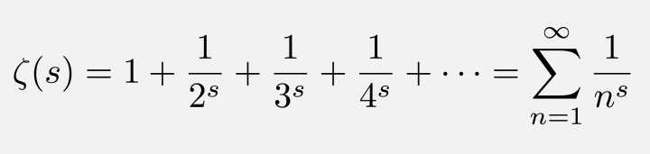

本文转载自知乎专栏，如需引用请告知原作者或注明以下出处
by 包遵信
from https://zhuanlan.zhihu.com/p/45078785

按：最近 1966 年菲尔兹奖得主，英国的迈克尔·阿蒂亚爵士，声称证明了黎曼假设，好几个朋友问我黎曼假设到底是什么。这些朋友受过大学教育，但并非数学专业，太平白的解释看了嫌没意思，稍微高深点的（比如 Wikipedia 的页面或者 Clay Institute 为黎曼假设悬赏 100 万美元时让 Bombieri 做的介绍）又看不懂，所以我决定尝试提供一个介于两者之间的内容。
写这一篇也意味着一些心态的变化——以往每次有数学领域的大新闻都觉得媒体和记者在胡说八道。事实上，记者也不是天才，不教他也不会懂，懂一点点的人有必要做些努力。在知乎专栏试试，可能还能让一些网友知道得稍微多一点，懂得多一点以后如果有兴趣还可以去看卢昌海关于黎曼假设的系列文章。
最后，现在写也不亏，下次有人说黎曼假设被证明的时候，这篇文章也许也还能派上用场。
以下正文。本文假设读者知道 复数和 幂级数的概念，希望聪明的高中生能看懂。数学系的念完大二可能就不用看了，本文真的不够硬核，属于科普之前的科普。
零. 四句话说清黎曼假设
如果要用四句话说清楚，那黎曼假设说的是下面的内容：
- 黎曼 zeta 函数是一个复变量的 复值函数，记作${\zeta(s)}$.
- 这个函数在复变量 ${s}$ 的实部大于 1 的时候由 ${\zeta(s) := \sum^\infty_{n=1}\dfrac{1}{n^s}}$定义。
- 这个函数可以 解析延拓到 “整个” 复平面上，成为复平面上的一个 亚纯函数。
- 这个函数的非平凡零点，实部等于 ${\dfrac{1}{2}}$ .
以下是详情，每句用一小章解释。
第一句
复数是形如 ${a+bi}$ , 其中 ${a}$,${b}$是实数，且${i^2=-1}$的数字。复数可以加、减、乘、除——用术语说，复数构成一个 数域 (field). 复数也可以用模和辐角写成 ${z=re^{i\theta}}$ 的形式。
我们可以把实数画在数轴上，在复数的情形，因为有两个实数，所以每个复数可以对应于平面上的一个点，这个平面叫复平面。上述的 ${a}$ ， ${b}$ 对应于复平面上的直角坐标； ${r}$ ， ${\theta}$ 对应于复平面上的极坐标。
很多我们熟悉的函数，比如多项式函数，正弦${\sin x}$、余弦${\cos x}$、指数函数${e^x}$，都可以扩展到整个复平面上，成为一个复变量的复值函数：即输入的值 ${z}$ 是一个复数，输出的值比如${f(z)=\sin z}$也是一个复数。指数函数的扩展定义为${e^{a+bi}:=e^a(\cos b+i \sin b)}$，可以看见，${b=0}$即${a+bi}$是实数的时候，函数值就是对实数定义的指数函数的值 ${e^a}$ ，这就是 “扩展” 两个字的意思。（实际上，高中见过的函数，基本上都可以做到这一点，除了对数函数的情形要稍微复杂一些。）
第二句
有个神秘的函数叫${\zeta}$（zeta, 泽塔函数），欧拉和黎曼都研究过。这个函数的原始定义并不太复杂，但要用到一个无穷求和：${\zeta(s):=1^{-s}+2^{s}+\cdots+n^{s}+\cdots}$
对欧拉而言，括号里的 ${s}$ 是 实数，函数值也是 实数。这时候从这个函数出发能发现一些信息——比如欧拉用这个函数给了 “素数有无穷多个” 这个结论的一个证明。欧拉也得到过 ${\zeta(2)=1+\dfrac{1}{4}+\dfrac{1}{9}+\dfrac{1}{16}+\cdots=\dfrac{\pi^2}{6}}$ 这一结论。
也许读者隐约能感受到，这函数跟 素数有点关系。但这还没发挥这个函数的全部威力。黎曼观察到，把这个定义看做一个复变量的复值函数更加厉害。得到的复值函数叫黎曼${\zeta}$函数。
${s}$ 是复数的时候 ${2^{-s}}$ 是什么意思呢？根据定义，${2^{-s}:=e^{-s \ln{2}}}$，其中${e^{z}}$是前面提到的复变量指数函数，${\ln{2}}$是 2 的自然对数。给定复数 ${s}$ ，对每个自然数 ${n}$ 计算 ${n^{-s}}$ , 再对全体 ${n}$ 求和，得到的结果就是${\zeta}$在 ${s}$ 这一点的值 ${\zeta(s)}$。
上面的求和并不总收敛——比如${s=0}$的时候它就是${1+1+\cdots+1+\cdots}$，但是我们可以证明，${s=a+bi}$的实部${a>1}$的时候，这个求和是收敛的，因为总有${|n^{-s}|<n^{-a}}$。（下文一律用${a}$表示${s}$的实部。）
实部${a=1}$的复数是复平面上的一条竖线，这样我们就得到了${\zeta(s)}$在这条竖线右边（即实部大于 1 的地方）的定义。而且这个函数有个很好的性质，即它在这条线右边是一个 全纯函数。
第三句
事实上，${\zeta(s)}$在那条竖线的左边更有趣一些——但是怎么把${\zeta(s)}$的定义扩展到那条线左边呢？这里说的扩展，不是随便写个定义（比如竖线左边的函数值定义成都是 0），而是保持那个 “很好的性质” 的扩展。
直接给个简单粗暴的办法，理由不赘：考虑${\zeta(s)\cdot(s-1)}$, 这在实部大于 1 的时候有定义，随便找个有定义的点，比如在${z=2}$那一点，做个泰勒展开：$${\zeta(s)\cdot(s-1)=\sum^\infty_{n=0}a_n(s-2)^n}$$
，其中${a_n}$是某个复数。
右边这个 幂级数，在整个复平面上都收敛。如果把右边这个幂级数定义的函数记作${f(s)}$的话，${f(s)}$是整个复平面上的全纯函数。${\zeta(s):=\dfrac{f(s)}{s-1}}$就能当做黎曼${\zeta}$函数在复平面上的定义，这是复平面上的一个 亚纯函数。它有很好的对称性（一个密切相关的函数，${\xi(s)}$，满足一个很对称的函数方程${\xi(s)=\xi(1-s)}$.）。
第四句
黎曼${\zeta}$函数什么时候是 0 呢？有一系列不太有趣的答案：在${s=-2,-4,-6,\cdots,-2n,\cdots}$的时候它是 0. 但是不止这些，它在${0\leq a \leq 1}$这条狭长的带子上，还可能有零点！这些零点叫 非平凡零点。
而且，这些零点包含了关于素数的很重要的信息——比如，可以用来计算小于某个数的素数的个数——关键词 Chebyshev function exact formula 请自行搜索。而著名的关于素数的渐近分布的素数定理，等价于${\zeta(s)}$在${a=1}$上没有零点（不深入计算很难想象，仅仅在实部为 1 这条线上没有零点这个信息就包含了那么丰富的内容）。所以，这些零点很重要。
关于这些零点，黎曼在 1859 年做出了个重要的猜想，即
黎曼假设：${\zeta(s)}$的非平凡零点，都位于${a=\dfrac{1}{2}}$这条直线上。
这个猜想 至今没被证明。如果它成立，数论里的几乎所有结果，都可以往前迈一大步。